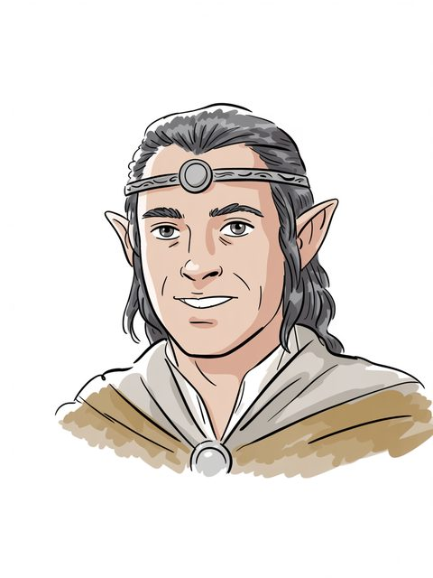

Elrond
figure of the legendarium
(F.A. 532–sails T.A. 3021)
Open the full record in the living archive →Part of the Arda Archive — a corpus-first index of Tolkien's legendarium; every fact cited, every silence declared.

of the legendarium

of the legendarium
F.A. 532–sails T.A. 3021a
Bearer of Vilyab
GENERATED. Ideogram V3, driven by a prompt written in this archive; no illustrator drew it and it must never be presented as though one had. Ruling 3 asks for the hand and this IS the hand -- 'generated' is an answer, 'unknown' would not be.c
“under Elrond Half-elven; but Elrond had far to go, and Sauron turned north and made at once for”d
“Elrond, and the evolution in relation to these of the work Of the Rings of”e
“King, and with him was Elrond Half-elven, who chose, as was granted to”f
The name stands in 2,971 cited lines, in 130 of the corpus's 192 texts — most often in The Lord of the Rings (259), The Lord of the Rings a Reader's Companion (227), The Treason of Isengard (203).g
a The text — LotR App B, 3021: 'Frodo and Bilbo depart over Sea with the Three Keepers' -- the annal names the Three Keepers, not him [C]
b The archive's reading — [I-H]
c The ruling — the owner's ruling of 13 August 2026, on the 552 generated images: 'we are free to use them'. That settles the LICENCE and does not settle the HAND, which is recorded above as what it is. [C]
d The text — Unfinished Tales of Numenor and Middle Earth · l.7509 [C]
e The text — The Peoples of Middle Earth · l.257 [C]
f The text — The Silmarillion · l.11844 [C]
g Counted — site/arda_apparatus.json [C]

719 Cited lines stand in 11 volumes of the drafts and 617 in 17 of the published books — the record thinned as Tolkien revised.h
Rivendell (169), Gondolin (14), Minas Tirith (8), Grey Havens (7).i
Imladris (Rivendell) (50), Númenor (25), Eregion (20), Mordor (19).j
“'The others go with him as free companions, to help him on his way. You may tarry, or come back, or turn aside into other paths, as chance allows. The further you go, the less easy will it be to withdraw; yet no oath or bond is laid on you to go further than you will. For you do not yet know the strength of your hearts, and you cannot foresee what each may meet upon the road.' 'Faithless is he that says farewell when the road darkens,' said Gimli. 'Maybe,' said Elrond, 'but let him not vow to walk in the dark, who has not seen the nightfall.' 'Yet sworn word may strengthen quaking heart,' said Gimli. 'Or break it,' said Elrond.”k
h Counted — site/arda_apparatus.json [C]
i Counted — site/arda_apparatus.json [C]
j Counted — site/arda_apparatus.json [C]
k The passage — The Lord of the Rings · l.12983 [C]

“J . D . COLLINS o f COUNCIL o f ELROND S m i a l , C . F . Mott C o l l e g e o f” — the name is near this line and the archive does not assert that it is this record.l
in Imladris; child of Eärendil, Elwing; wedded to Celebrían; father or mother of Elladan, Elrohir, Arwen Undómiel; F.A. 532–sails T.A. 3021.m
l The line — Mallorn 3 · l.246 [EXT]
m The table — Silm, table I (House of Finwe); App A [C]
Elrond Half-elven — called so by the loremasters of the Eldar, in Common Speech. “In Middle-earth dwelt also Gil-galad the High King, and with him was Elrond Half-elven, who chose, as was granted to him, to be numbered among the Eldar; but Elros his brother chose to abide with Men.”n
Peredhel — called so by the Sindar, in Sindarin. “Half-elven Translation of Sindarin Peredhel, plural Peredhil, applied to Elrond and Elros, and to Eärendil.”o
Elros Tar-Minyatur (132), Galadriel (117), Bilbo Baggins (51), Gil-galad (46) — a shared line is a fact about the line, not a claim that the two met.p
counted from corpus lines that name BOTH records. A shared line is a fact about the line, not a claim that the two met; `eg` names a line a reader can open. [C]
Elrond is Ilkorin.q
a marginal hand recording a change to this record — searched over 59 verified notes in site/arda_hands.json, and nothing was found.r
n The passage — The Silmarillion · l.11844 [C]
o The passage — The Silmarillion · l.14801 [C]
p Counted — site/arda_apparatus.json [C]
q The lexicon — https://eldamo.org/content/words/word-1435877997.html [EXT]
r The search — site/arda_apparatus.json [C]
(F.A. 532–sails T.A. 3021)
Open the full record in the living archive →